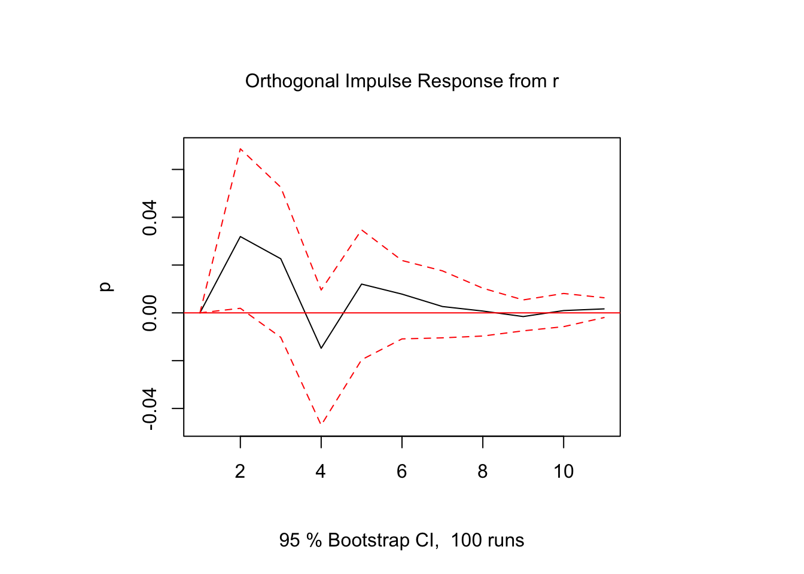
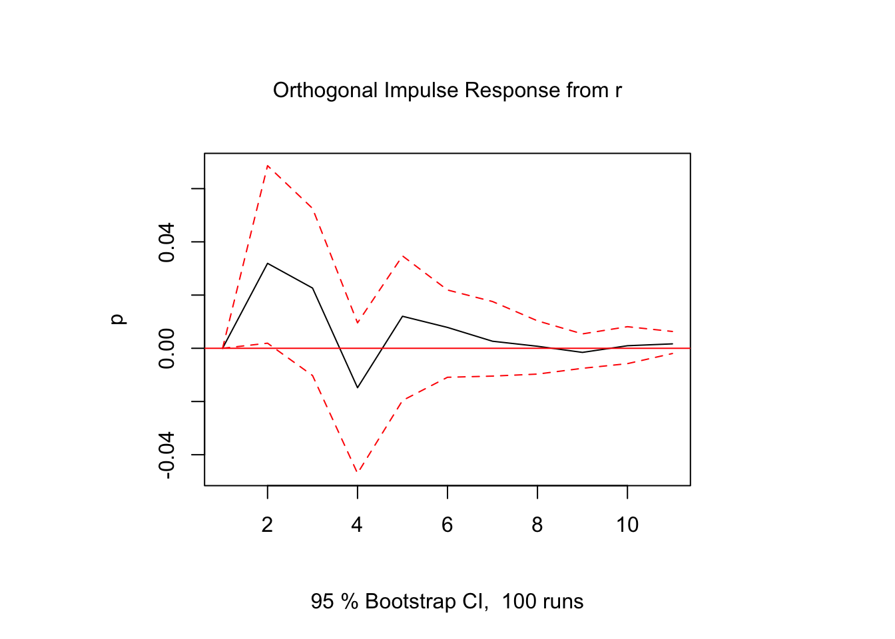
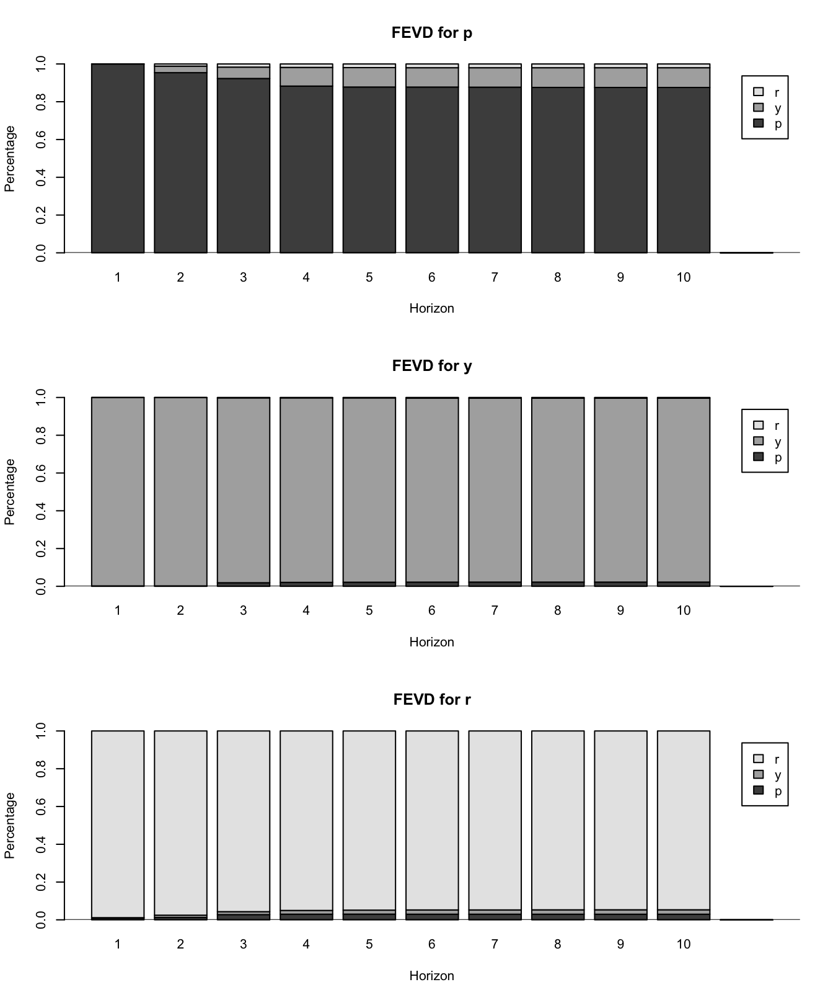

library(vars)
data = readRDS("data/md.Rds")
y = cbind(p = data$CPI, y = data$NGDP, r = data$Repo7D)
var = VAR(as.ts(y), p = 4)
irf(var, impulse = "r", response = "p", ortho = TRUE) |> plot()
Given the Structural VAR,
\[ \Theta_0 y_t = \Phi_1 y_{t-1} + \Phi_2 y_{t-2} + \cdots + \Phi_p y_{t-p} + \epsilon_t \]
We estimate the reduced-form VAR using the methods in Chapter 27:
\[ y_t = A_1 y_{t-1} + A_2 y_{t-2} + \cdots + A_p y_{t-p} + u_t \]
where \(A_j = \Theta_0^{-1}\Phi_j\) and \(u_t = \Theta_0^{-1}\epsilon_t\). \(\Theta_0\) can be estimated using the identification scheme discussed in Chapter 29, so that the structural parameters can be recovered accordingly.
However, the coefficients of a VAR are difficult to interpret. For empirical analysis, we are particularly interested in estimating the impact of a structural shock on other economic variables (e.g. the impact of monetary policy shock on inflation). We cannot read off this information from the estimated VAR coefficients.
In this section, we introduce two reporting techniques: impulse-response functions (IRF) and forecast error variance decomposition (FEVD).
With VAR parameters estimated, we can convert it to the MA form:
\[ y_t = A^{-1}(L)u_t = u_t + \Psi_1 u_{t-1} + \Psi_2 u_{t-2} + \cdots \]
or written in structural shocks:
\[ y_t = \Theta_0^{-1}\epsilon_t + \Psi_1\Theta_0^{-1}\epsilon_{t-1} + \Psi_2\Theta_0^{-1}\epsilon_{t-2} + \cdots \]
With this structural MA form, we can directly read off the impact of structural shock \(j\) on observable variable \(k\):
\[\frac{\partial y_{t+h}^k}{\partial\epsilon_t^j} = (\Psi_h\Theta_0^{-1})_{kj}\]
A sequence of the marginal impacts over time \(\left\{\frac{\partial y_{t}^k}{\partial\epsilon_t^j}, \frac{\partial y_{t+1}^k}{\partial\epsilon_t^j}, \frac{\partial y_{t+2}^k}{\partial\epsilon_t^j}, \dots\right\}\) constitute the dynamic response of variable \(k\) in response to structural shock \(j\), also known as the impulse-response function.
Note that \(\frac{\partial y_{t+h}^k}{\partial u_t^j}\) cannot be interpreted as the response of \(y_{t+h}^k\) after a shock on \(u_t^j\). Because \(u_t^j\) could be a linear combination of multiple structural shocks, e.g.
\[ u_t^1 =a_1\epsilon_t^1 + a_2 \epsilon_t^2 + a_3 \epsilon_t^3 \]
Therefore, no structural meaning can be attached to \(\frac{\partial y_{t+h}^k}{\partial u_t^j}\). But \(\frac{\partial y_{t+h}^k}{\partial\epsilon_t^j}\) is interpretable, as structural shocks \(\epsilon_t\) are uncorrelated.
If \(\Theta_0\) has a recursive structure, \(\Theta_0\) can be found simply by applying decomposition to the OLS-estimated \(\hat\Omega\):
\[ \hat\Omega=LDL' \]
If \(\hat\Omega\) is positive definite, such decomposition always exist, with \(D\) diagonal and \(L\) lower triangular with \(1\)s on the diagonal.
If we restrict \(D\) to be an identity matrix, the decomposition becomes
\[ \hat\Omega = PP' \]
where \(P = LD^{1/2}\). This is known as the Cholesky decomposition. By applying the Cholesky decomposition, we have
\[ \zeta_t = P^{-1}u_t = D^{-1/2}L^{-1}u_t = D^{-1/2}\epsilon_t \]
in which \(1\) unit shock to \(\zeta_t\) is equivalent to \(1\) standard deviation shock to \(\epsilon_t\). The IRFs estimated with Cholesky decomposition thus have the interpretation of response to standard-deviation shocks.
The IRF confidence intervals are usually constructed by bootstrapping.
We would also like to know the relative importance of each structural force, which can be gauged by computing the forecast error variance decomposition (FEVD). Consider the forecast error
\[ y_{t+h} - \hat y_{t+h|t} = \Theta_0^{-1}\epsilon_{t+h} + \Psi_1\Theta_0^{-1}\epsilon_{t+h-1} + \cdots + \Psi_{h-1}\Theta_0^{-1}\epsilon_{t+1} \]
The mean squared error (MSE) is
\[ \begin{aligned} \text{MSE}(\hat y_{t+h|t}) &= \mathbb{E}[(y_{t+h} - \hat y_{t+h|t})(y_{t+h} - \hat y_{t+h|t})'] \\[1em] &= \Omega + \Psi_1\Omega\Psi_1' + \Psi_2\Omega\Psi_2' + \cdots + \Psi_{h-1}\Omega\Psi_{h-1}' \end{aligned} \]
where
\[ \begin{aligned} \Omega &= \mathbb{E}(\Theta_0^{-1}\epsilon_{t}\epsilon_{t}'{\Theta_0^{-1}}') \\ &= \begin{bmatrix} a_1 & a_2 & \dots & a_n \end{bmatrix} \begin{bmatrix} \text{var}(\epsilon_{1,t}) & & & \\ & \text{var}(\epsilon_{2,t}) & & \\ & & \ddots & \\ & & & \text{var}(\epsilon_{n,t}) \\ \end{bmatrix} \begin{bmatrix} a_1' \\ a_2' \\ \vdots \\ a_n' \end{bmatrix} \\[1em] &= a_1a_1'\text{var}(\epsilon_{1,t}) + a_2a_2'\text{var}(\epsilon_{2,t}) + \cdots + a_n a_n'\text{var}(\epsilon_{n,t}) \end{aligned} \]
Therefore,
\[ \text{MSE}(\hat y_{t+h|t}) =\sum_{j=1}^n \{ \text{var}(\epsilon_{j,t}) [a_ja_j' + \Psi_1a_ja_j'\Psi_1' + \cdots + \Psi_{h-1}a_ja_j'\Psi_{h-1}'] \} \]
The contribution of the \(j\)-th structural force to the MSE of the \(h\)-period-ahead forecast is given by
\[ \text{var}(\epsilon_{j,t}) [a_ja_j' + \Psi_1a_ja_j'\Psi_1' + \cdots + \Psi_{h-1}a_ja_j'\Psi_{h-1}']. \]
library(vars)
data = readRDS("data/md.Rds")
y = cbind(p = data$CPI, y = data$NGDP, r = data$Repo7D)
var = VAR(as.ts(y), p = 4)
irf(var, impulse = "r", response = "p", ortho = TRUE) |> plot()
fevd(var) |> plot()